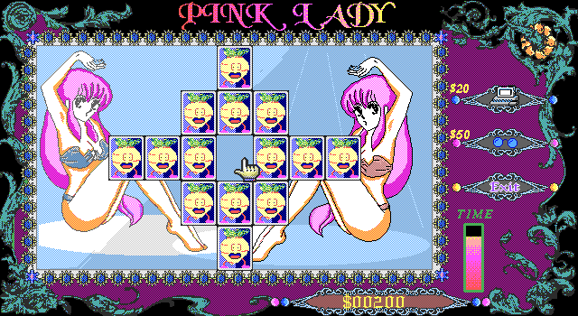

名稱：亞紀子 (Pink Lady，中文版)
簡介：長重資訊1993年出品的18禁撲克牌記憶遊戲。玩者必須在限時內翻開蓋著的撲克牌，
若同時翻到兩張同顏色同數字之撲克牌時，即可將之消去，直到所有撲克牌都除去後，
便依所剩時間進行計分。遊戲中也提供一些功能輔助除去撲克牌。當分數每達500分便
會顯示一張美女圖做為獎賞，而遊戲一共有12張美女圖，全部過關後還有2部清涼影片
可觀賞。

保護：顏色密碼，破解碼：
POKER.EXE (先用PKLITE解壓)
76 08 FF 76 06 9A 76 20
-- 1E -- -- 20 -- -- --
注意舊式破解碼均為不完整破解，過關顯示美女圖時會出現File Manager錯誤。
備註：電腦速度不可太快，否則可能會偵測不到音效卡而沒有背景音樂。
密技：Alt+F9 = 直接消去所有牌組
備註：CG圖有露點。